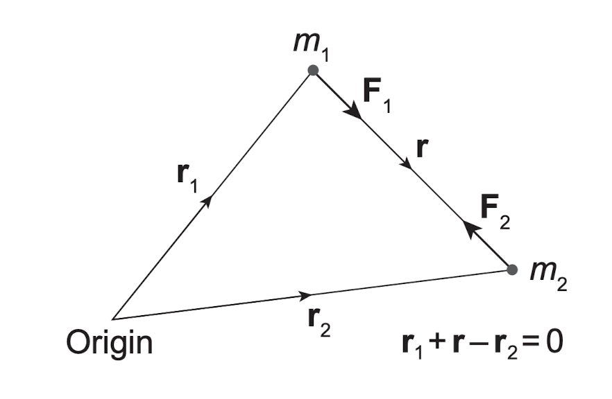

两体问题
May 10, 2024前言： 牛顿引力下两质点的相互作用过程，对行星形成和更复杂的多体问题都十分重要，并且有完全解析解。本学习笔记基于 Philip. J. Armitage 的 Astrophysics of Planet Formation。
目录
1. 两体问题的解
Figure 1: 两体问题示意图 | Credit: Philip.J.Armitage
考虑两质点在牛顿引力下相互作用。二者受力为 \begin{align} \boldsymbol{F_1}&=m_1\boldsymbol{\ddot{r_1}}=\frac{Gm_1m_2}{r^3}\boldsymbol{r}, \\ \boldsymbol{F_2}&=m_2\boldsymbol{\ddot{r_2}}=-\frac{Gm_1m_2}{r^3}\boldsymbol{r}, \end{align}
这里 \(r=|\boldsymbol{r}|\)。我们通过相对位移 \(\boldsymbol{r}=\boldsymbol{r_2}-\boldsymbol{r_1}\)，把问题化简为一个方程 \begin{equation} \boldsymbol{\ddot{r}}=\boldsymbol{\ddot{r_2}}-\boldsymbol{\ddot{r_1}}=-\frac{G(m_1+m_2)}{r^3}\boldsymbol{r} \end{equation}定义约化质量 \(\mu\equiv G(m_1+m_2)\)，方程变为 \begin{equation} \boldsymbol{\ddot{r}}=-\frac{\mu}{r^3}\boldsymbol{r} \end{equation}
为了解这个方程，我们在轨道平面上建立极坐标系(\(r\),\(\theta\))。我们将会用到位矢的时间一阶和二阶倒数 \begin{align} \boldsymbol{r}&=r\boldsymbol{\hat{r}} \\ \boldsymbol{\dot{r}}&=\dot{r}\boldsymbol{\hat{r}}+r\dot{\theta}\boldsymbol{\hat{\theta}} \\ \boldsymbol{\ddot{r}}&=\left(\ddot{r}-r\dot{\theta^2}\right)\boldsymbol{\hat{r}}+\frac{1}{r}\frac{\text{d}}{\text{d}t}\left(r^2\dot{\theta}\right)\boldsymbol{\hat{\theta}} \end{align}
这里 \(\boldsymbol{\hat{r}}\) 是径向单位矢量，\(\boldsymbol{\hat{\theta}}\) 是方位角单位矢量，垂直于 \(\boldsymbol{\hat{r}}\)。
1.1 束缚轨道
To be continued.Bibliography
- Philip.J.Armitage. Astrophysics of Planet Formation (2nd Edition). ISBN: 9781108420501.